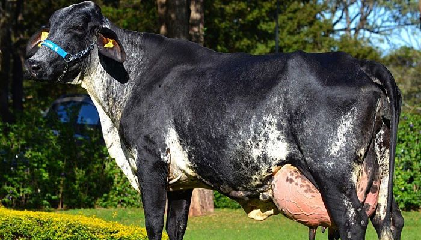
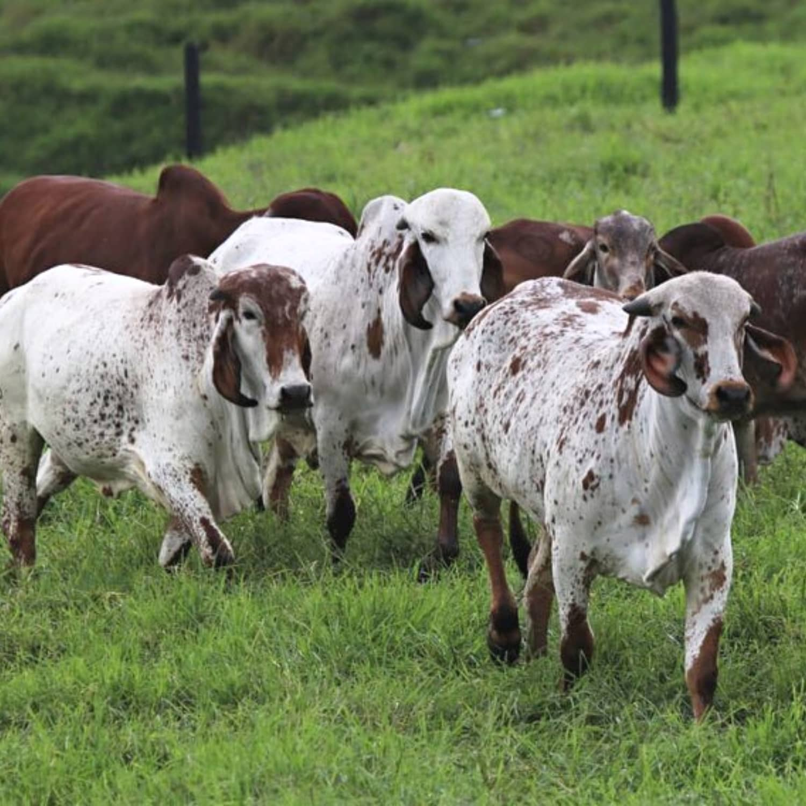

Girolando (Lechero)
LecheLa reina lechera del trópico – 5/8 Holstein + 3/8 Gyr

Clic para ampliar
Origen
Brasil
Composición
5/8 Holstein + 3/8 Gyr
Aptitud
Leche especializada en clima cálido
Producción
4,000 – 7,500 L (Récords >15,000 L)
Parámetros Zootécnicos & Potencial Productivo
Tolerancia al Estrés Calórico
96%
Producción Láctea Tropical
98%
Resistencia a Ectoparásitos
92%
Habilidad de Ordeño
90%
Características Sobresalientes
- Reúne el torrente lechero de la Holstein con la sudoración, rusticidad y termo-tolerancia del Gyr lechero.
- Produce altos volúmenes de leche en potreros tropicales donde las razas europeas puras colapsan.
- Excelente docilidad en el ordeño manual o mecánico con o sin ternero al pie.
- Canal de terneros y descarte con muy buena conformación cárnica.
Posicionamiento en el Mercado
Representa más del 80% de la leche producida en Brasil y es el modelo de modernización del trópico en América Latina.
Galería de Ejemplares en Hato

Girolando en ordeño y campo

Rebaño Girolando en pasturas cálidas